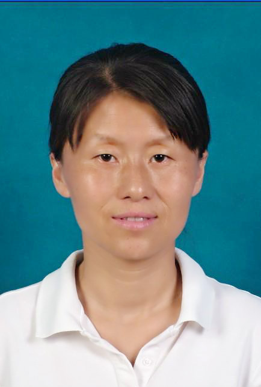

|  | Jing LiColleage of Computer Science and Technology,Nanjing University of Aeronautics and Astronautics No.29, Jiangjun Avenue, Jiangning District, Nanjing, China, 211106 Email: jingli@nuaa.edu.cn |
Short Biography
I recieved the B.S.and M.S. degree in School of Computer Science & Engineering from Chang Chun university of technology in 1998 and 2001,respectively, and the Ph.D. in Computer Science and Technology from Nanjing University, China in 2004. Currently, she is a Associate Professor of Nanjing University of Aeronautics and Astronautics, China.
Research Interests
My Current research interess mainly include image processing and data mining. Soving the problems in cosaliency and cosegmentation for multiple images and video is our future research direction.
Team
Jing Li(Teacher), Xiu-Zhong Li(2006), Min Zhang(2008), Hai-Lin Hu(2009), Zhong-Lu Xu(2010), Hai-Yang Bai(2011), Pei-Yun Zhou(2012), Ning-Min Shen(2013), Hua-Feng Lin(2014), Da-Chuang Liang(2014), Dong-Ming Li(2015)
Publications
-
Jing Li, Zhaoqian Chen, Shifu Chen. EM-GMPF : An EM-Based Gaussian Mixture Particle Filter Algorithm. Journal of Computer Research and Development(in chinese). 2005, 42(7):1210-1216
-
Jing Li, Zhaoqian Chen, Xiaolin Qin. Non-Rigid Object Real-Time Tracking Based on Particle Filter Algorithm. Journal of Nanjing University of Aeronautics & Astronautics(in chinese). 2006, 38(6):775-779
-
Jing Li, Xiaolin Qin,Fang Li,Wei Zhu,Luhong Qian. New Method Based on Region Coarse Localization and Chan-Vese Model for Weld Pool Edge Extraction in MAG Welding. Journal of Mechanical Engineering(in chinese). 2011, 47(12):74-78
-
Jing Li,Fang Li,Wei Zhu,Jianxiong Liao,Luhong Qian. MAG extraction method based on passive optical pipeline backing welding seam edge. Transactions of the China Welding Institution(in chinese). 2011, 32(10):69-72
-
Jing Li,Fang Li,Xiaolin Qian,Wei Zhu,Min Zhang,Luhong Qian. Seam Extraction Method Based on Sobel Operator and Greedy Snake Model. Journal of Chinese Computer Systems(in chinese). 2011, 32(12):2491-2494
-
Jing Li,Ningmin Shen,Haiyang Bai,Peiyun Zhou. Schedulability verification of embedded system AADL model based on timed automata. Journal of Southeast University (Natural Science Edition)(in chinese). 2015, 45(6):1032-1037
Myself
Students
Min Zhang |
Min Zhang,Jing Li. A new method of mathematic morphology and chan-vese model foe weld pool edge extraction . Electric Welding Machine. 2010: 19-23 |
Hailin Hu |
Hailin Hu, Jing Li, Zhonglu Xu, Wei Zhu. Seam tracking algorithm based on multi-information sensor of vision and arc. Computer Application(in chinese), 2012,32(06):1760-1765. Hailin Hu, Jing Li, Fang Li, Zhu Wei, Pang Heqiang. Neural-fuzzy variable gap control method for GMAW pipe-line welding with CCD camera. In: Applied Mechanics and Materials, 2012: 130-134 |
Zhonglu Xu |
Zhonglu Xu,Jing Li,Dan Chen,Fang Li.A WELD PENETRATION PREDICTION METHOD BASED ON RMB FOR GMAW PIPE-LINE BACKING WELDING.Computer Applications and Software(in chinese). 2013, 30(10):239-242 |
| Haiyang Bai | Haiyang Bai, Jing Li, Na Zhao. Schedulability validation of embedded software model based on time automaton. Computer Engineering & Science(in chinese), 2013, 35(3): 121-127. Haiyang Bai, Jing Li, Peiyun Zhou, Yi Zhuang. HDE-UITool: A Rapid Interactive Interface Prototype Generation Tool for Aircraft Design Software//The 2013 2nd International Symposium on Computer, Communication, Control and Automation. Singapore: Atlantis Press, 2013: 123-127 Haiyang Bai, Jing Li, Peiyun Zhou, Yi Zhuang. Study of User Interface Prototype System G enerati on for Ai rcraft Desi gn Software. Journal of Chinese Computer Systems(in chinese). 2015, 36(1):89-94 |
| Peiyun Zhou | Peiyun Zhou, Jing Li, Ningmin Shen, et al. An Improved Weld Seam Extraction Method Using Saliency Detection for Pipe-Line Welding Based on GMAW and Passive Light. Applied Mechanics and Materials. 2014, 598: 160-163. Peiyun Zhou,Jing Li,Ningmin Shen,Yi Zhuang.BSFCoS: Fast Co-saliency Detection Based on Block and Sparse Principle Feature Extraction .Computer Science(in chinese). 2015,42(8):305-313 |
 Ningmin Shen Ningmin Shen |
ningminshen |
| Waiting... | |
| Waiting... | |
| Waiting... |